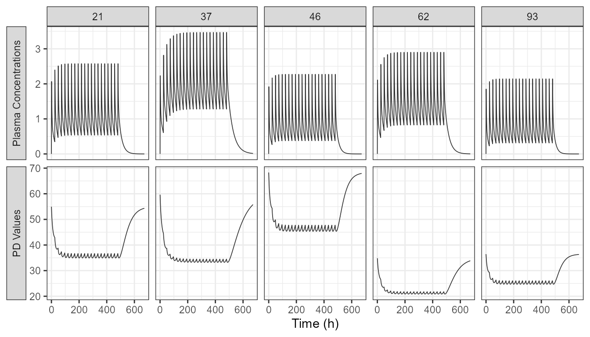
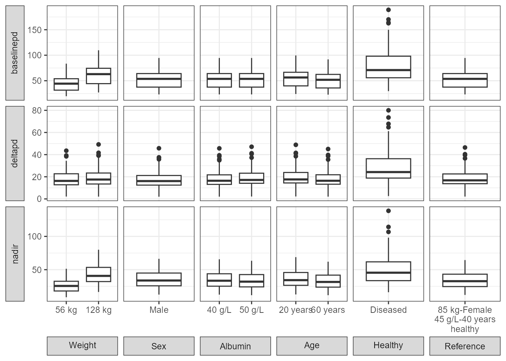

PK/PD Model: Assessing the Impact of Covariates on a Biomarker
Source:vignettes/PKPD_Example.Rmd
PKPD_Example.RmdHere we illustrate how the ordinary differential equations (ODEs)
model and the approach of varying one covariate at a time, can be
expanded.
We link the same two-compartment PK model (from the PK Example vignette)
to an indirect response pharmacodynamic (PD) model where the drug
concentrations inhibit the rate constant of input (Kin).
The covariates model included several covariates effects on Clearance,
Volume and Kin. The baseline PD value is controlled by the ratio of
Kin/Kout.
In this vignette we do not go into a lot of details, as we assume that
the user has read and run the code of the Introduction to
coveffectsplot and PK Example vignettes and that the reader
is familiar with PK/PD concepts.
At the end we show how we can add a table under a multiple parameters
forest plot.
Specifying a PK/PD Model using mrgsolve
codepkpdmodelcov <- '
$PARAM @annotated
KA : 0.5 : Absorption rate constant Ka (1/h)
CL : 4 : Clearance CL (L/h)
V : 10 : Central volume Vc (L)
Vp : 50 : Peripheral volume Vp (L)
Qp : 10 : Intercompartmental clearance Q (L/h)
CLALB : -0.8 : Ablumin on CL (ref. 45 g/L)
CLSEX : 0.2 : Sex on CL (ref. Female)
CLWT : 1 : Weight on CL (ref. 85 kg)
VSEX : 0.07 : Sex on Vc (ref. Female)
VWT : 1 : Weight on Vc (ref. 85 kg)
KIN : 3 : Zero-order Rate constant of biomarker production (amount/h)
KOUT : 0.06 : First-order Rate constant of biomarker loss (1/h)
IC50 : 3 : Drug concentration producing 50% of maximum inhibition
IMAX : 0.999 : Maximum Inhibition Response
gamma : 0.55 : Sigmoidicity factor of the sigmoid Emax equation
KINWT : 0.4 : Weight on KIN (ref. 85 kg)
KINAGE : -0.08 : Age on KIN (ref. 40 years)
KINHLTY: 1.5 : Weight on CL (ref. 85 kg)
$PARAM @annotated // reference values for covariate
WT : 85 : Weight (kg)
SEX : 0 : Sex (0=Female, 1=Male)
ALB : 45 : Albumin (g/L)
AGE : 40 : Age (years)
HEALTHY: 0 : Health Status (0=Diseased, 1=Healthy)
$CMT GUT CENT PER RESP
$GLOBAL
#define CP (CENT/Vi)
#define CPER (PER/Vpi)
#define INH (IMAX*pow(CP,gamma)/(pow(IC50,gamma)+pow(CP,gamma)))
#define PDRESP RESP
$MAIN
double KAi = KA;
double Vpi = Vp *pow((WT/70.0), 1);
double Qpi = Qp *pow((WT/70.0), 0.75);
double CLi = CL *
pow((ALB/45.0), CLALB)*
(SEX == 1.0 ? (1.0+CLSEX) : 1.0)*
pow((WT/85.0), CLWT)*exp(ETA(1));
double Vi = V *
(SEX == 1.0 ? (1.0+VSEX) : 1.0)*
pow((WT/85.0), VWT)*exp(ETA(2));
double KINi = KIN *
pow((AGE/40), KINAGE)*
(HEALTHY == 1.0 ? KINHLTY : 1.0)*
pow((WT/85.0), KINWT)*exp(ETA(3));
double RESP_0 = KINi/KOUT;
$OMEGA
0.09
0.01 0.09
$OMEGA
0.25
$ODE
dxdt_GUT = -KAi *GUT;
dxdt_CENT = KAi *GUT - (CLi+Qpi)*CP + Qpi*CPER;
dxdt_PER = Qpi*CP - Qpi*CPER;
dxdt_RESP = KINi*(1-INH) - KOUT*RESP;
$CAPTURE CP PDRESP KAi CLi Vi Vpi Qpi WT SEX ALB AGE HEALTHY
'
modpkpdsim <- mcode("codepkpdmodelcov", codepkpdmodelcov)
partab <- setDT(modpkpdsim@annot$data)[block=="PARAM", .(name, descr, unit)]
partab <- merge(partab, melt(setDT(modpkpdsim@param@data), meas=patterns("*"), var="name"))
knitr::kable(partab)| name | descr | unit | value |
|---|---|---|---|
| AGE | Age | years | 40.000 |
| ALB | Albumin | g/L | 45.000 |
| CL | Clearance CL | L/h | 4.000 |
| CLALB | Ablumin on CL | ref. 45 g/L | -0.800 |
| CLSEX | Sex on CL | ref. Female | 0.200 |
| CLWT | Weight on CL | ref. 85 kg | 1.000 |
| HEALTHY | Health Status | 0=Diseased, 1=Healthy | 0.000 |
| IC50 | Drug concentration producing 50% of maximum inhibition | . | 3.000 |
| IMAX | Maximum Inhibition Response | . | 0.999 |
| KA | Absorption rate constant Ka | 1/h | 0.500 |
| KIN | Zero-order Rate constant of biomarker production | amount/h | 3.000 |
| KINAGE | Age on KIN | ref. 40 years | -0.080 |
| KINHLTY | Weight on CL | ref. 85 kg | 1.500 |
| KINWT | Weight on KIN | ref. 85 kg | 0.400 |
| KOUT | First-order Rate constant of biomarker loss | 1/h | 0.060 |
| Qp | Intercompartmental clearance Q | L/h | 10.000 |
| SEX | Sex | 0=Female, 1=Male | 0.000 |
| V | Central volume Vc | L | 10.000 |
| VSEX | Sex on Vc | ref. Female | 0.070 |
| VWT | Weight on Vc | ref. 85 kg | 1.000 |
| Vp | Peripheral volume Vp | L | 50.000 |
| WT | Weight | kg | 85.000 |
| gamma | Sigmoidicity factor of the sigmoid Emax equation | . | 0.550 |
Simulate Reference Subjects with BSV
We simulate at reference covariate values with between subject variability (BSV) and then we show a plot of the PK and PD profiles of five random subjects.
idata <- data.table(ID=1:nbsvsubjects, WT=85, SEX=0, ALB=45, AGE=40, HEALTHY = 0)
ev1 <- ev(time = 0, amt = 100, cmt = 1, ii = 24, addl = 20)
data.dose <- ev(ev1)
data.dose <- setDT(as.data.frame(data.dose))
data.all <- data.table(idata, data.dose)
set.seed(678549)
outputpkpdsim <- modpkpdsim %>%
data_set(data.all) %>%
mrgsim(end = 28*24, delta = 0.25) %>%
as.data.frame %>%
as.data.table
outputpkpdsim$HEALTHY <- as.factor(outputpkpdsim$HEALTHY)
yvar_names <- c(
'CP'="Plasma Concentrations",
'RESP'="PD Values"
)
set.seed(678549)
outputpkpdsimlong <- outputpkpdsim[outputpkpdsim$ID %in%
sample(unique(outputpkpdsim$ID), 5), ] %>%
gather(key,value,CP,RESP)
ggplot(data =outputpkpdsimlong ,
aes(time, value, group = ID)) +
geom_line(alpha = 0.8, size = 0.3) +
facet_grid(key ~ID,scales="free_y",switch="y",
labeller = labeller(key=yvar_names)) +
labs(y = "", color = "Sex", x = "Time (h)")+
theme(strip.placement = "outside",
axis.title.y=element_blank())
Compute PD Parameters and Summarize BSV
Here we compute the PD baseline (where we start), nadir response (minimum response achieved) and the delta (difference) between the baseline and nadir. We then summarize and report the BSV around these parameters as ranges of 50 and 90% of patients. We then show a plot of the first 10 replicates as an example of the simulated PD profiles. Since the code is similar to the PK Example vignette it is not shown.
derive.exposure <- function(time, PDRESP) {
x <- c(
nadir = min(PDRESP, na.rm = TRUE),
baselinepd = PDRESP[1L],
deltapd = PDRESP[1L]-min(PDRESP, na.rm = TRUE)
)
data.table(paramname=names(x), paramvalue=x)
}
refbsv <- outputpkpdsim[, derive.exposure(time, PDRESP),
by=.(ID, WT, SEX, ALB, AGE, HEALTHY)]
refbsv[, stdparamvalue := paramvalue/median(paramvalue), by=paramname]
bsvranges <- refbsv[,list(
P05 = quantile(stdparamvalue, 0.05),
P25 = quantile(stdparamvalue, 0.25),
P50 = quantile(stdparamvalue, 0.5),
P75 = quantile(stdparamvalue, 0.75),
P95 = quantile(stdparamvalue, 0.95)), by = paramname]
bsvranges
#> paramname P05 P25 P50 P75 P95
#> 1: nadir 0.6276383 0.8514868 1 1.222234 1.701741
#> 2: baselinepd 0.6230568 0.8462084 1 1.203854 1.740792
#> 3: deltapd 0.6017202 0.8147581 1 1.199841 1.708660Construct ans Simulate at Combinations of Covariate of Interest
Similarly to the PK Example vignette we generate covariate combinations of interest and we simulate with uncertainty using an invented varcov matrix.
reference.values <- data.frame(WT = 85, ALB = 45, AGE = 40, SEX = 0, HEALTHY = 0)
covcomb <- expand.modelframe(
WT = c(56,128),
AGE = c(20,60),
ALB = c(40,50),
SEX = c(1),#Refernce is for SEX =0
HEALTHY = c(1),#Refernce is for HEALTHY =0
rv = reference.values)
# Add the reference
covcomb <- rbind(covcomb, data.table(reference.values, covname="REF"))
covcomb$ID <- 1:nrow(covcomb)
covcomb
#> WT AGE ALB SEX HEALTHY covname ID
#> 1 56 40 45 0 0 WT 1
#> 2 128 40 45 0 0 WT 2
#> 3 85 40 40 0 0 ALB 3
#> 4 85 40 50 0 0 ALB 4
#> 5 85 20 45 0 0 AGE 5
#> 6 85 60 45 0 0 AGE 6
#> 7 85 40 45 1 0 SEX 7
#> 8 85 40 45 0 1 HEALTHY 8
#> 9 85 40 45 0 0 REF 9
albumin.labs <- c("albumin: 40 ng/mL","albumin: 45 ng/mL","albumin: 50 ng/mL")
names(albumin.labs) <- c("40","45","50")
wt.labs <- c("weight: 85 kg","weight: 56 kg","weight: 128 kg")
names(wt.labs) <- c("85","56","128")
age.labs <- c("age: 20 years","age: 40 years","age: 60 years")
names(age.labs) <- c("20","40","60")
pdprofiles <- ggplot(iter_sims[iter_sims$rep<=10,], aes(time/24,PDRESP,col=factor(WT),linetype=factor(HEALTHY) ) )+
geom_line(aes(group=interaction(ID,rep)),alpha=0.3,size=0.3)+
geom_line(data=outcovcomb,aes(group=interaction(ID)),color="black")+
facet_nested(ALB+SEX~ AGE+WT, labeller =
labeller( WT = wt.labs,
ALB = albumin.labs,
AGE = age.labs))+
labs(linetype="Black Lines\nNo Uncertainty\nHealthy Status",
colour="Colored Lines\nUncertainty\nReplicates\n(1 to 10)\nWeight (kg)",
caption ="Simulation\nwith Uncertainty without BSV" ,
x="Days", y = "PD Values")+
guides(colour = guide_legend(override.aes = list(alpha = 1)))
pdprofilesCompute PD Parameters and Distributions Plots
Similar to the above we compute the PD parameters, standardize by the median and provide a plot. Since the code is similar to the PK Example vignette it is not shown.
boxplotpd <- ggplot(boxplotdat,
aes(x=covvalue ,y=paramvalue))+
facet_grid(paramname ~covname2,scales="free",switch="both",
labeller = label_parsed)+
geom_boxplot()+
theme(axis.title = element_blank(),strip.placement = "outside")+
labs(y="PD Parameter Values",x="Covariate Value")
boxplotpd
pdggridges<- ggplot(out.df.univariatecov.nca,
aes(x=paramvaluestd,y=covvalue,fill=factor(..quantile..),height=..ndensity..))+
facet_grid(covname2~paramname,scales="free_y",space="free")+
annotate( "rect",
xmin = 0.5,
xmax = 2,
ymin = -Inf,
ymax = Inf,
fill = "gray",alpha=0.4
)+
stat_density_ridges(
geom = "density_ridges_gradient", calc_ecdf = TRUE,
quantile_lines = TRUE, rel_min_height = 0.001,scale=0.9,
quantiles = c(0.05,0.5, 0.95)) +
scale_fill_manual(
name = "Probability", values = c("white", "#0000FFA0","#0000FFA0", "white"),
labels = c("(0, 0.05]", "(0.05, 0.5]","(0.5, 0.95]", "(0.95, 1]")
)+
geom_vline( aes(xintercept = 1),size = 1)+
theme_bw()+
labs(x="Effects Relative to Parameter Reference value",y="")+
scale_x_continuous(breaks=c(0.25,0.5,0.8,1/0.8,1/0.5,1/0.25))+
scale_x_log10()
pdggridges
Summarize, add the BSV Ranges and Putting it all Together Using
forest_plot
Here we show how a multiple parameters, multiple covariates and table can be done.
coveffectsdatacovrep <- out.df.univariatecov.nca %>%
dplyr::group_by(paramname,covname,covvalue) %>%
dplyr::summarize(
mid= median(paramvaluestd),
lower= quantile(paramvaluestd,0.05),
upper = quantile(paramvaluestd,0.95))
coveffectsdatacovreplabel<- coveffectsdatacovrep %>%
mutate(
label= covvalue,
LABEL = paste0(format(round(mid,2), nsmall = 2),
" [", format(round(lower,2), nsmall = 2), "-",
format(round(upper,2), nsmall = 2), "]"))
setkey(bsvranges, paramname)
coveffectsdatacovrepbsv <- coveffectsdatacovrep[coveffectsdatacovrep$covname=="REF",]
coveffectsdatacovrepbsv$covname <- "BSV"
coveffectsdatacovrepbsv$covvalue <- "50% of patients"
coveffectsdatacovrepbsv$label <- "50% of patients"
coveffectsdatacovrepbsv$lower <- bsvranges$P25
coveffectsdatacovrepbsv$upper <- bsvranges$P75
coveffectsdatacovrepbsv2 <- coveffectsdatacovrep[coveffectsdatacovrep$covname=="REF",]
coveffectsdatacovrepbsv2$covname <- "BSV"
coveffectsdatacovrepbsv2$covvalue <- "90% of patients"
coveffectsdatacovrepbsv2$label <- "90% of patients"
coveffectsdatacovrepbsv2$lower <- bsvranges$P05
coveffectsdatacovrepbsv2$upper <- bsvranges$P95
coveffectsdatacovrepbsv<- rbind(coveffectsdatacovrep,coveffectsdatacovrepbsv,coveffectsdatacovrepbsv2)
coveffectsdatacovrepbsv <- coveffectsdatacovrepbsv %>%
mutate(
label= covvalue,
LABEL = paste0(format(round(mid,2), nsmall = 2),
" [", format(round(lower,2), nsmall = 2), "-",
format(round(upper,2), nsmall = 2), "]"))
coveffectsdatacovrepbsv<- as.data.frame(coveffectsdatacovrepbsv)
coveffectsdatacovrepbsv$label <- as.factor(coveffectsdatacovrepbsv$covvalue )
coveffectsdatacovrepbsv$label <- reorder(coveffectsdatacovrepbsv$label,
coveffectsdatacovrepbsv$lower)
coveffectsdatacovrepbsv$covname <-factor(as.factor(coveffectsdatacovrepbsv$covname ),levels =c("WT","SEX","ALB","AGE","HEALTHY", "REF", "BSV"),
labels= c("Weight","Sex","Albumin","Age","Healthy", "Reference", "BSV")
)
interval_legend_text <- "Median (points)\n90% CI (horizontal lines)"
interval_bsv_text <- "BSV (points)\nPrediction Intervals (horizontal lines)"
ref_legend_text <- "Reference\n(vertical line)\nClinically relevant limits\n(gray area)"
area_legend_text <- "Reference\n(vertical line)\nClinically relevant limits\n(gray area)"
png("./Figure_S_PD_4.png",width =12 ,height = 9,units = "in",res=72)
coveffectsplot::forest_plot(coveffectsdatacovrepbsv,
ref_area = c(0.5, 1/0.5),
x_range = c(0.25,4),
strip_placement = "outside",
base_size = 16,
y_label_text_size = 12,
y_label_text_width = 50,
xlabel = "Fold Change Relative to Reference",
ref_legend_text = ref_legend_text,
area_legend_text =area_legend_text,
interval_legend_text = interval_legend_text,
interval_bsv_text = interval_bsv_text,
facet_formula = "covname~paramname",
facet_switch = "y",
facet_scales = "free_y",
facet_space = "fixed",
paramname_shape = FALSE,
table_position = "below",
table_text_size=4,
plot_table_ratio = 1,
table_facet_switch = "both",
show_table_facet_strip = "both",
show_table_yaxis_tick_label = TRUE,
logxscale = TRUE,
major_x_ticks = c(0.5, 1, 1/0.5),
major_x_labels = c("1/2", "1", "2"),
table_margin = c(0,5.5,0,0),
plot_margin =c(0,5.5,0,0),
reserve_table_xaxis_label_space = FALSE,
return_list = FALSE)
dev.off()
#> agg_png
#> 2
# consider returning a list and editing the y axis label line breaks height
# theme(axis.text.y = element_text(lineheight = ))Covariate Effects Plot.